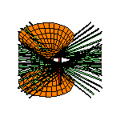

Common Transversals and TangentsFrank SottileUniversity of Masssachusetts, Amherst INRIA, Nancy 16 June 2003 |
 |
We describe some interesting symbolic computations that arose while studying the following simple geometric problem:
Consider k lines and 4-k spheres in R3.
Besides the interesting geometry, computation, and pictures, we feel that the
study of geometry in 3-space is a fertile area for potential applications of
symbolic and computational algebra.
The results in this talk represent joint work with
Gabor Megyesi and
Thorsten Theobald.
A
web page
featuring many, many pictures from this study.